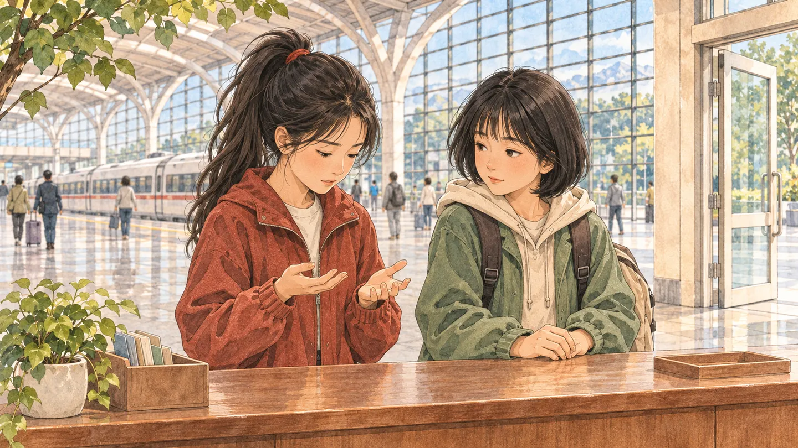

Игра · Бюро находок
Поймай улики
Сначала послушай. Если смысл ускользнул, открой реплику и попробуй снова. Улики сохраняются в досье.
История продолжается на вокзале
我的书包在哪儿？
На вокзале пропал рюкзак. Короткие реплики помогут выяснить, как он выглядит, что внутри и где его искать.
Начать расследование ↓
Вспомни знакомое
Вспомни, как спросить, сколько времени займёт дорога. Скажи вслух, а потом сверься с репликой.
Следующий шаг. Скажи, что школа недалеко от вокзала. 学校离火车站很近。
Послушай и вспомни
В каждом наборе четыре слова. Сначала разбери их в карточках, затем попробуй вспомнить без подсказки.
Игра · Бюро находок
Сначала послушай. Если смысл ускользнул, открой реплику и попробуй снова. Улики сохраняются в досье.
Сверь улики
У каждого варианта кое-что совпадает. Сверь цвет, содержимое и место.
Игра · Другой случай
Послушай новую заявку и найди подходящее описание. Затем поменяй две детали и скажи свою версию вслух.